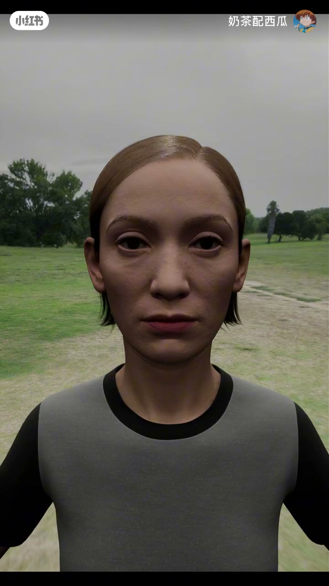
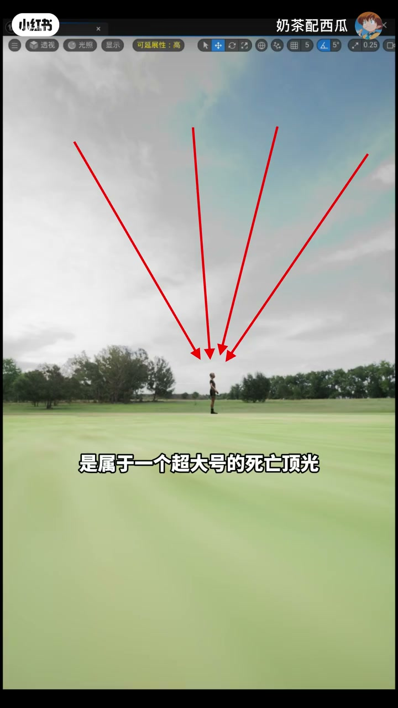
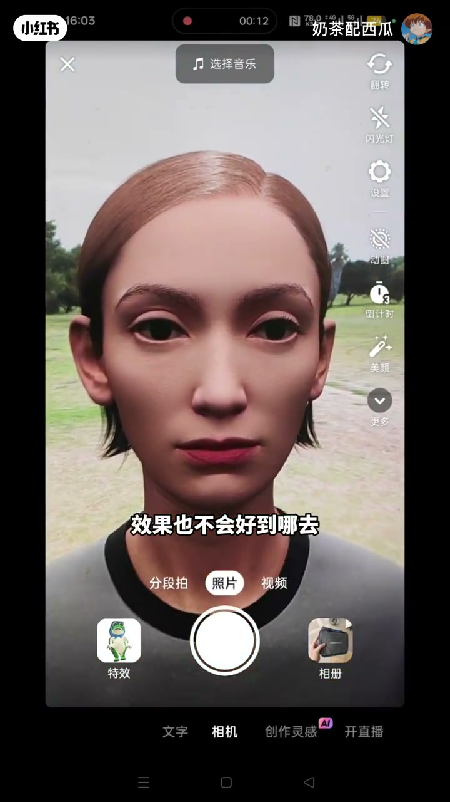
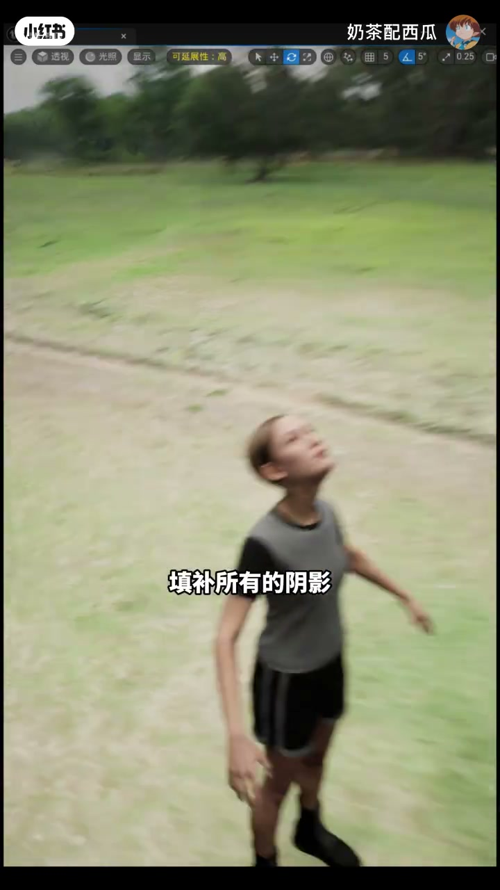
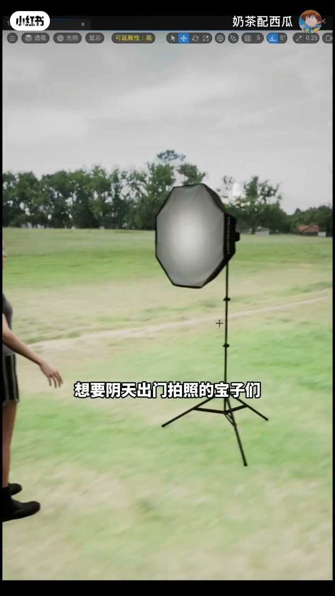
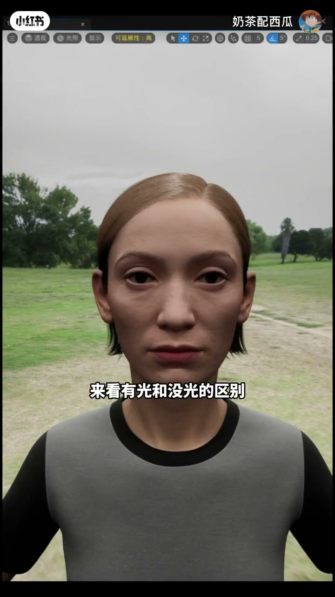

内容要点
「奶茶配西瓜」用 3D 人像演示阴天人像难看的根因：云层变成超大号「死亡顶光」，眼窝、法令纹和脸颊阴影被光线锁死；只调曝光或后期修图往往改不了结构。对策不是硬修，而是改光——抬头让天空光正打脸，或出门带一盏足够亮的正面灯，再配合哑光粉底与散粉控制油光。
知识结构
阴天光源来自大气层/云层，是超大号死亡顶光；亮度滑条和修图都改变不了已被光线决定的阴影与无神眼神。
「要相信光」：把脸转向天空，让顶光变成正面填充，法令纹与阴影可大幅消失；适合仰头看天一类构图。
建议至少带一盏灯正面打光，冲淡瑕疵并做出眼神光；灯光偏油时用哑光粉底+散粉，灯形不限只要够亮。
阴天把脸拍丑，本质是顶光塑形而不是「曝光不够」。先改相对光位（抬头或正面灯），再谈修图；妆面用哑光防止补光后的油光。
00:00–00:56阴天「死亡顶光」：法令纹与无神眼神从哪来
开场直接抛题：为什么阴天拍照会把脸拍得特别丑。作者用数字人像站在阴沉草地上演示——不是「灰一点」那么简单，而是所有光源都来自大气层或云层，相当于头顶挂着一盏超大号「死亡顶光」。
画面用红色箭头从天空指向人物头顶，把「光从哪来」画清楚。这种顶光会把眼窝压暗、法令纹加深，眼神也容易显得无神。作者强调：这种死亡顶光根本没法靠事后随便救回来——问题在光向，不在某一档曝光值。


00:38–01:02只调亮度或修图，救不回已被光线决定的阴影
很多人第一反应是「画面再提亮一点」。作者演示：你调节画面亮度，依旧改变不了死亡顶光造成的法令纹和皱纹——因为脸上的阴影情况已经被光线决定了。
软件修图也有边界：脸颊过黑、眼睛无神这类「光塑形」问题，后期往往修不好；有人说「你不会修图吗」，作者用半开玩笑的语气回：「你那么牛，你慢慢修吧」——潜台词是：别把光位问题丢给磨皮。

01:02–01:31对策一：转动脸朝天，把顶光改成正面填充
真正的解法口号是「我们要相信光」。具体动作：转动脸部，让脸朝向天上——原来压在头顶的光，会变成正对面部的填充光，把眼窝、法令纹等阴影填补掉。
演示里随便转一下脸，法令纹和其他阴影就大幅度消失。作者建议可以拍「仰头看天空」一类视角；也承认这个动作「可能有点猎奇」，但重点是光位对了，脸就好看很多。

01:31–02:09对策二：正面灯具 + 哑光妆面防油光
若姿态改光不够，就直接从脸部正面打光。作者非常建议阴天出门至少带一个灯具：正面灯光会冲淡瑕疵和阴影，眼睛里还能做出眼神光。画面里摆出柔光箱做对比——「来看有光和没光的区别」。
副作用也讲清楚了：正面灯光可能比较油。化妆的人建议用哑光粉底液，定妆多上散粉，尽量不要上膏状类产品。灯具形状不挑——长的、宽的、扁的都行，只要足够亮就可以了。


详细文字转录
以下内容按 Whisper 原始分段完整呈现（已转简体），可能包含识别误差；「眼弦光」按语境校正为「眼神光」。
为什么在阴天拍照会把脸拍的特别丑
主要是所有的光源都来自于大气层或者云层,是属于一个超大号的死亡顶光
而且这种死亡顶光根本没法救回来
你调节画面的亮度,依旧改变不了死亡顶光造成的法令纹和皱纹
因为脸上的阴影情况已经被光线决定了
就算你用软件协修,效果也不会好到哪去
因为光线造成的脸颊过黑、眼睛无神,也是解决不了的
有人肯定会说你不会修图嘛
嗯,你那么牛逼,你慢慢去修吧
解决脸难看的问题,就是我们要相信光
比如我们可以转动脸部,让脸朝向天上
这样天上的光线,会直接正面照射到脸部,填补所有的阴影
现在我随便转动了一下脸部,来看看脸上的情况
法令纹和其他阴影已经大大幅度消失
脸部朝上,天空光照直接正对脸部
我们可以拍仰头看天空的视角就会好很多
当然这个动作可能有点猎奇,不要在意这些细节
然后就是直接从脸部正面打光,也可以解决这个问题
想要阴天出门拍照的宝子们
我会非常建议至少带一个灯具出门
正面的灯光会直接冲淡你脸上所有的瑕疵和阴影
而且眼睛里面还有眼神光
来看有光和没光的区别
正面的灯光可能会比较油
化妆的宝子们建议用哑光粉底液
然后定妆的时候多上点散粉,尽量不要上膏状类产品
灯具无论是什么形状的都可以,长的宽的扁的
只要足够亮,就可以了